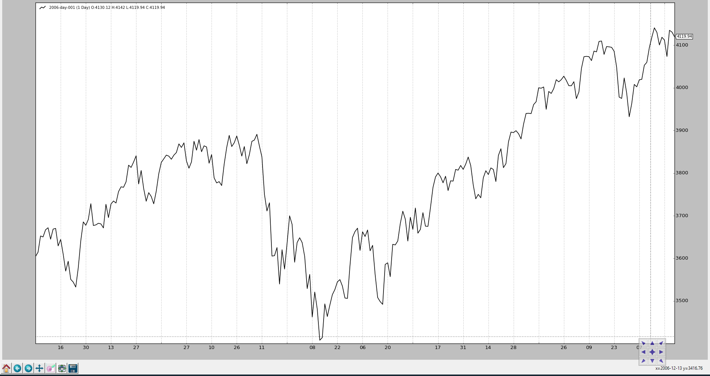
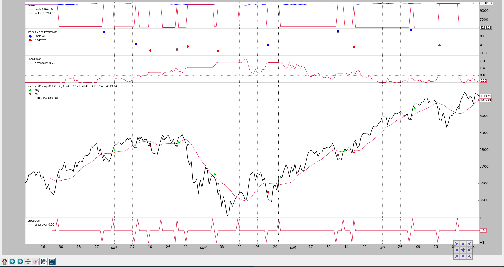

Observers and Statistics¶
Strategies running inside the backtrader do mostly deal with data feeds
and indicators.
Data feeds are added to Cerebro instances and end up being part of the input of strategies (parsed and served as attributes of the instance) whereas Indicators are declared and managed by the Strategy itself.
All backtrader sample charts have so far had 3 things plotted which seem to
be taken for granted because they are not declared anywhere:
- Cash and Value (what’s happening with the money in the broker)
- Trades (aka Operations)
- Buy/Sell Orders
They are Observers and exist within the submodule
backtrader.observers. They are there because Cerebro supports a
parameter to automatically add (or not) them to the Strategy:
stdstats(default:True)
If the default is respected Cerebro executes the following equivalent user code:
import backtrader as bt
...
cerebro = bt.Cerebro() # default kwarg: stdstats=True
cerebro.addobserver(bt.observers.Broker)
cerebro.addobserver(bt.observers.Trades)
cerebro.addobserver(bt.observers.BuySell)
Let’s see the usual chart with those 3 default observers (even if no order is issued and therefore no trade happens and there is no change to the cash and portfolio value)
from __future__ import (absolute_import, division, print_function,
unicode_literals)
import backtrader as bt
import backtrader.feeds as btfeeds
if __name__ == '__main__':
cerebro = bt.Cerebro(stdstats=False)
cerebro.addstrategy(bt.Strategy)
data = bt.feeds.BacktraderCSVData(dataname='../../datas/2006-day-001.txt')
cerebro.adddata(data)
cerebro.run()
cerebro.plot()

Now let’s change the value of stdstats to False when creating the
Cerebro instance (can also be done when invoking run):
cerebro = bt.Cerebro(stdstats=False)
The chart is different now.
{kind=link}
Accesing the Observers¶
The Observers as seen above are already there in the default case and collecting information which can be used for statistical purposes and that’s why acess to the observers can be done through an attribute of the strategy called:
stats
It is simply a placeholder. If we recall the addition of one of the default Observers as laid out above:
...
cerebro.addobserver(backtrader.observers.Broker)
...
The obvious question would be how to access the Broker observer. Here for
example how it’s done from the next method of a strategy:
class MyStrategy(bt.Strategy):
def next(self):
if self.stats.broker.value[0] < 1000.0:
print('WHITE FLAG ... I LOST TOO MUCH')
elif self.stats.broker.value[0] > 10000000.0:
print('TIME FOR THE VIRGIN ISLANDS ....!!!')
The Broker observer just like a Data, an Indicator and the Strategy itself
is also a Lines objects. In this case the Broker has 2 lines:
cashvalue
Observer Implementation¶
The implementation is very similar to that of an Indicator:
class Broker(Observer):
alias = ('CashValue',)
lines = ('cash', 'value')
plotinfo = dict(plot=True, subplot=True)
def next(self):
self.lines.cash[0] = self._owner.broker.getcash()
self.lines.value[0] = value = self._owner.broker.getvalue()
Steps:
- Derive from
Observer(and not fromIndicator)- Declare lines and params as needed (
Brokerhas 2 lines but no params)- There will be an automatic attribute
_ownerwhich is the strategy holding the observer
Observers come in action:
- After all Indicators have been calculated
- After the Strategy
nextmethod has been executed- That means: at the end of the cycle … they observe what has happened
In the Broker case it’s simply blindly recording the broker cash and
portfolio values at each point in time.
Adding Observers to the Strategy¶
As already pointed out above, Cerebro is using the stdstats parameter to
decide whether to add 3 default Observers, alleviating the work of the end
user.
Adding other Observers to the mix is possible, be it along the stdstats or
removing those.
Let’s go for the usual strategy which buys when the close price goes above a
SimpleMovingAverage and sells if the opposite is true.
With one “addition”:
- DrawDown which is an already existing observer in the
backtraderecosystem
from __future__ import (absolute_import, division, print_function,
unicode_literals)
import argparse
import datetime
import os.path
import time
import sys
import backtrader as bt
import backtrader.feeds as btfeeds
import backtrader.indicators as btind
class MyStrategy(bt.Strategy):
params = (('smaperiod', 15),)
def log(self, txt, dt=None):
''' Logging function fot this strategy'''
dt = dt or self.data.datetime[0]
if isinstance(dt, float):
dt = bt.num2date(dt)
print('%s, %s' % (dt.isoformat(), txt))
def __init__(self):
The visual output shows the evolution of the drawdown
{kind=link}
And part of the text output:
...
2006-12-14T23:59:59+00:00, MaxDrawDown: 2.62
2006-12-15T23:59:59+00:00, DrawDown: 0.22
2006-12-15T23:59:59+00:00, MaxDrawDown: 2.62
2006-12-18T23:59:59+00:00, DrawDown: 0.00
2006-12-18T23:59:59+00:00, MaxDrawDown: 2.62
2006-12-19T23:59:59+00:00, DrawDown: 0.00
2006-12-19T23:59:59+00:00, MaxDrawDown: 2.62
2006-12-20T23:59:59+00:00, DrawDown: 0.10
2006-12-20T23:59:59+00:00, MaxDrawDown: 2.62
2006-12-21T23:59:59+00:00, DrawDown: 0.39
2006-12-21T23:59:59+00:00, MaxDrawDown: 2.62
2006-12-22T23:59:59+00:00, DrawDown: 0.21
2006-12-22T23:59:59+00:00, MaxDrawDown: 2.62
2006-12-27T23:59:59+00:00, DrawDown: 0.28
2006-12-27T23:59:59+00:00, MaxDrawDown: 2.62
2006-12-28T23:59:59+00:00, DrawDown: 0.65
2006-12-28T23:59:59+00:00, MaxDrawDown: 2.62
2006-12-29T23:59:59+00:00, DrawDown: 0.06
2006-12-29T23:59:59+00:00, MaxDrawDown: 2.62
Note
As seen in the text output and in the code, the DrawDown observer has
actually 2 lines:
drawdownmaxdrawdown
The choice is not to plot the maxdrawdown line, but make it is still
available to the user.
Actually the last value of maxdrawdown is also available in a direct
attribute (not a line) with the name of maxdd
Developing Observers¶
The implementation of the Broker observer was shown above. To produce a
meaningful observer, the implementation can use the following information:
self._owneris the currently strategy being executedAs such anything within the strategy is available to the observer
Default internal things available in the strategy which may be useful:
broker-> attribute giving access to the broker instance the strategy creates order againstAs seen in
Broker, cash and portfolio values are collected by invoking the methodsgetcashandgetvalue
_orderspending-> list orders created by the strategy and for which the broker has notified an event to the strategy.The
BuySellobserver traverses the list looking for orders which have executed (totally or partially) to create an average execution price for the given point in time (index 0)
_tradespending-> list of trades (a set of completed buy/sell or sell/buy pairs) which is compiled from the buy/sell orders
An Observer can obviously access other observers over the
self._owner.stats path.
Custom OrderObserver¶
The standard BuySell observer does only care about operations which have
executed. We can create an observer which shows when orders where created and if
they expired.
For the sake of visibility the display will not be plotted along the price but on a separate axis.
from __future__ import (absolute_import, division, print_function,
unicode_literals)
import math
import backtrader as bt
class OrderObserver(bt.observer.Observer):
lines = ('created', 'expired',)
plotinfo = dict(plot=True, subplot=True, plotlinelabels=True)
plotlines = dict(
created=dict(marker='*', markersize=8.0, color='lime', fillstyle='full'),
expired=dict(marker='s', markersize=8.0, color='red', fillstyle='full')
)
def next(self):
for order in self._owner._orderspending:
if order.data is not self.data:
continue
if not order.isbuy():
continue
# Only interested in "buy" orders, because the sell orders
# in the strategy are Market orders and will be immediately
# executed
if order.status in [bt.Order.Accepted, bt.Order.Submitted]:
self.lines.created[0] = order.created.price
elif order.status in [bt.Order.Expired]:
self.lines.expired[0] = order.created.price
The custom observer only cares about buy orders, because this is a strategy which only buys to try to make a profit. Sell orders are Market orders and will be executed immediately.
The Close-SMA CrossOver strategy is changed to:
- Create a Limit order with a price below 1.0% the close price at the moment of the signal
- A validity for the order of 7 (calendar) days
The resulting chart.
{kind=link}
Several orders have expired as can be seen in the new subchart (red squares) and we can also appreciate that between “creation” and “execution” several days happen to be.
Finally the code for this strategy which applies the new observer
from __future__ import (absolute_import, division, print_function,
unicode_literals)
import datetime
import backtrader as bt
import backtrader.feeds as btfeeds
import backtrader.indicators as btind
from orderobserver import OrderObserver
class MyStrategy(bt.Strategy):
params = (
('smaperiod', 15),
('limitperc', 1.0),
('valid', 7),
)
def log(self, txt, dt=None):
''' Logging function fot this strategy'''
dt = dt or self.data.datetime[0]
if isinstance(dt, float):
dt = bt.num2date(dt)
print('%s, %s' % (dt.isoformat(), txt))
def notify_order(self, order):
if order.status in [order.Submitted, order.Accepted]:
# Buy/Sell order submitted/accepted to/by broker - Nothing to do
self.log('ORDER ACCEPTED/SUBMITTED', dt=order.created.dt)
self.order = order
return
if order.status in [order.Expired]:
self.log('BUY EXPIRED')
elif order.status in [order.Completed]:
if order.isbuy():
self.log(
'BUY EXECUTED, Price: %.2f, Cost: %.2f, Comm %.2f' %
(order.executed.price,
order.executed.value,
order.executed.comm))
else: # Sell
self.log('SELL EXECUTED, Price: %.2f, Cost: %.2f, Comm %.2f' %
(order.executed.price,
order.executed.value,
order.executed.comm))
# Sentinel to None: new orders allowed
self.order = None
def __init__(self):
# SimpleMovingAverage on main data
# Equivalent to -> sma = btind.SMA(self.data, period=self.p.smaperiod)
sma = btind.SMA(period=self.p.smaperiod)
# CrossOver (1: up, -1: down) close / sma
self.buysell = btind.CrossOver(self.data.close, sma, plot=True)
# Sentinel to None: new ordersa allowed
self.order = None
def next(self):
if self.order:
# pending order ... do nothing
return
# Check if we are in the market
if self.position:
if self.buysell < 0:
self.log('SELL CREATE, %.2f' % self.data.close[0])
self.sell()
elif self.buysell > 0:
plimit = self.data.close[0] * (1.0 - self.p.limitperc / 100.0)
valid = self.data.datetime.date(0) + \
datetime.timedelta(days=self.p.valid)
self.log('BUY CREATE, %.2f' % plimit)
self.buy(exectype=bt.Order.Limit, price=plimit, valid=valid)
def runstrat():
cerebro = bt.Cerebro()
data = bt.feeds.BacktraderCSVData(dataname='../../datas/2006-day-001.txt')
cerebro.adddata(data)
cerebro.addobserver(OrderObserver)
cerebro.addstrategy(MyStrategy)
cerebro.run()
cerebro.plot()
if __name__ == '__main__':
runstrat()
Saving/Keeping the statistics¶
As of now backtrader has not implemented any mechanism to track the values
of observers storing them into files. The best way to do it:
- Open a file in the
startmethod of the strategy- Write the values down in the
nextmethod of the strategy
Considering the DrawDown observer, it could be done like this
class MyStrategy(bt.Strategy):
def start(self):
self.mystats = open('mystats.csv', 'wb')
self.mystats.write('datetime,drawdown, maxdrawdown\n')
def next(self):
self.mystats.write(self.data.datetime.date(0).strftime('%Y-%m-%d'))
self.mystats.write(',%.2f' % self.stats.drawdown.drawdown[-1])
self.mystats.write(',%.2f' % self.stats.drawdown.maxdrawdown-1])
self.mystats.write('\n')
To save the values of index 0, once all observers have been processed a custom observer which writes to a file could be added as the last observer to the system to save values to a csv file.
Note
The Writer functionality can automate this task.